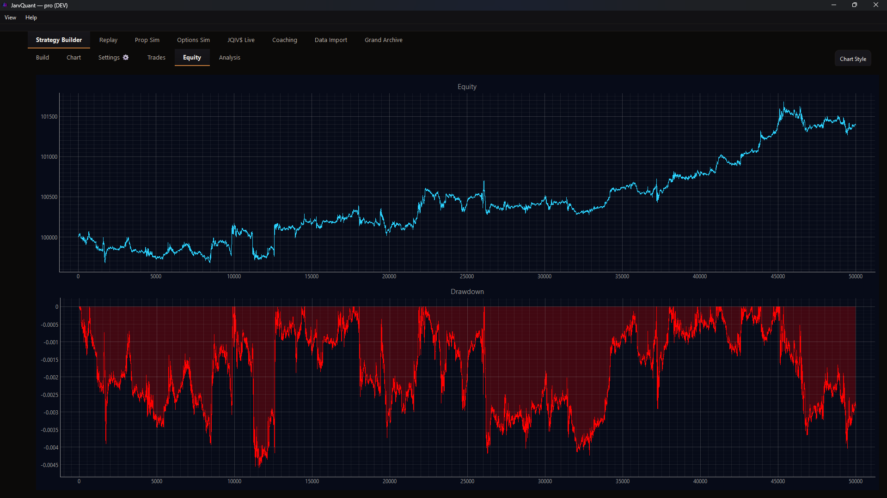
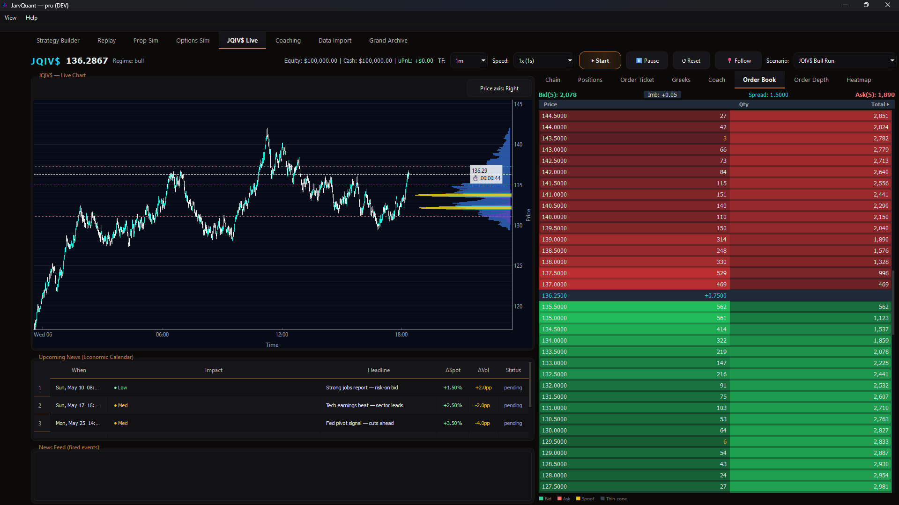
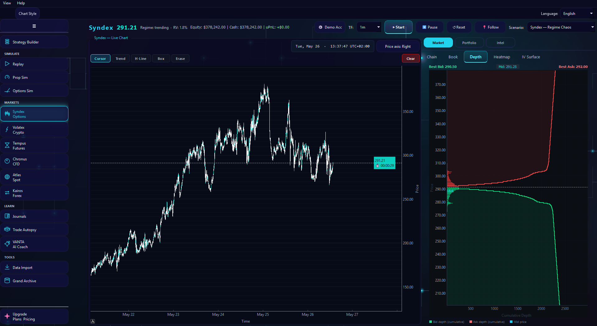
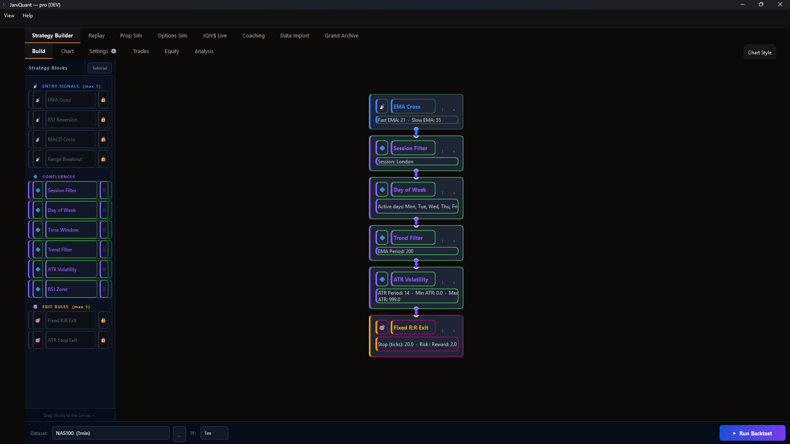
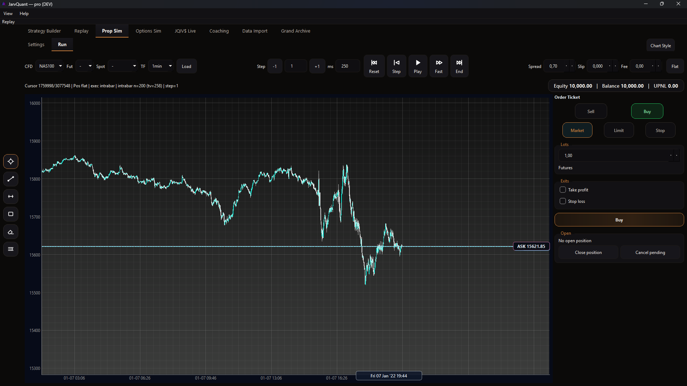
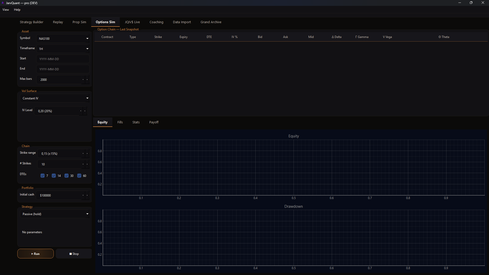
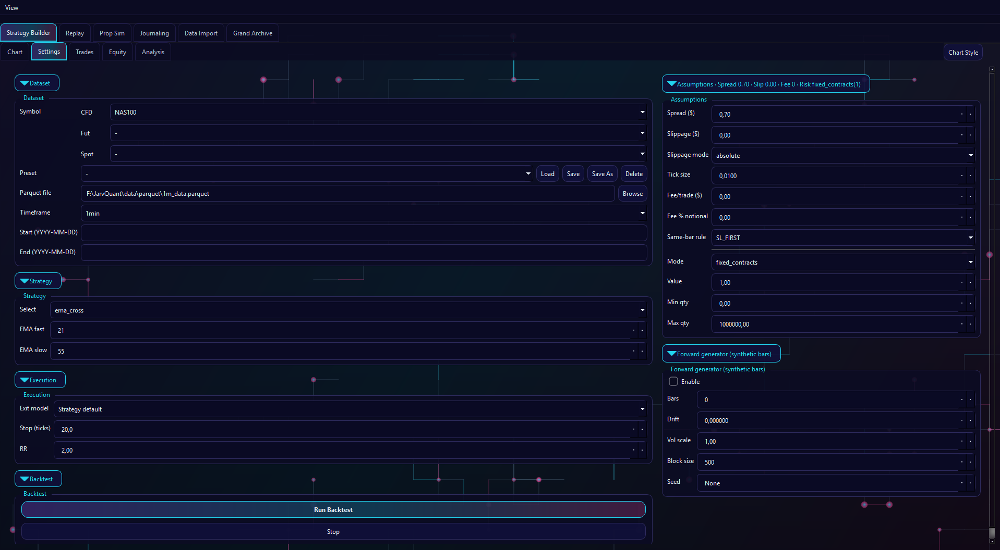

JarvQuant
Replay-first archive of market memory.
Scroll to enter the archive
THRESHOLD · BOOK I
Enter the archive.
Every market leaves a trace. Precision begins where memory is organized.
- Replay-first training: revisit your decisions before hindsight.
- Journaling that stays searchable — patterns don’t get lost in screenshots.
- Structure and constraints: turn repetition into a system you can trust.
This is how you stop guessing — and start getting better on purpose.
Scroll to travel · Click a record to focus.
MEMORY FIELD
Market decisions don’t disappear.
Stored imprints. Retrieved patterns. Quiet, repeatable learning.


Strategy Builder — Equity + Drawdown

JQIV$ Live — Order Book

JQIV$ Live — Order Depth

Strategy Builder — Node Graph

Prop Sim — Bar-by-Bar Replay

Options Sim — Chain + IV Setup
The Model
- No VC dependency. No external pricing pressure.
- No 'we monetize your data' — structurally impossible by design.
Approach
- Built by a solo developer + an AI agent — no bloated team, no overhead.
- Community-first beta: real feedback before public launch.
- Course-sellers need you to sell. You're building what they can’t deliver.
Angle
- Trading education is broken: courses, Discords, lifestyle content.
- JarvQuant gives traders what institutions have had for years.
- Faster. Leaner. More honest than what exists right now.
Scroll to move. Click a record to zoom.
REPLAY CHAMBER
Revisit the moment before hindsight.
Time as a surface you can move through — not a chart you scroll past.

(Next: timeline sweep + candle traces.)
STRATEGY STRUCTURE
Turn repetition into architecture.
Rules. Constraints. Risk. Execution — wired into a system you can trust.

(Next: module graph + path tracing.)
ACCESS · BOOK V
Choose how you train.
Free starts the loop. Pro builds the system. Elite shows you yourself.
FREE
Starter
€0
Forever — no card.
- Replay-first chart environment
- Data imports
- Journal Lite — 10 entries rolling
- 1 active strategy slot
Get a key
MOST POPULAR
PRO
Operator
€39.99
/mo
or €349 / year — saves ~€131
- Everything in Free, unlimited
- Strategy Builder Sandbox
- Prop Sim with rule presets
- Backtesting
- Full Journal — unlimited entries
Start with Pro
ELITE
Architect
€79.99
/mo
or €699 / year — saves ~€261
- Everything in Pro
- Trade Autopsy — algorithmic post-trade review
- NOX AI Coach (beta)
- Grand Archive — 300 curated strategies
- Cloud sync + priority support
Go Elite
Currently in private beta · Discord for invites & v1.0 launch alerts
Join Discord ↗
Pricing locks at v1.0. Founders rate stays grandfathered for life.
Navigation
Scroll to travel • Click a chapter above • Click records to open
ARC-V0.3.0 · ENTRY 0001